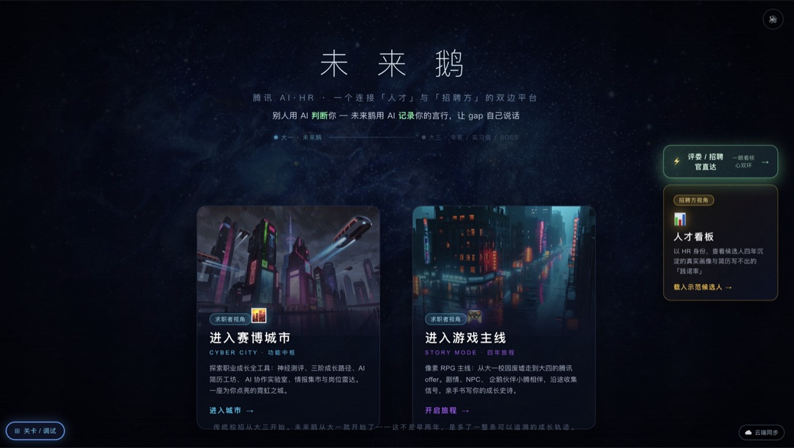
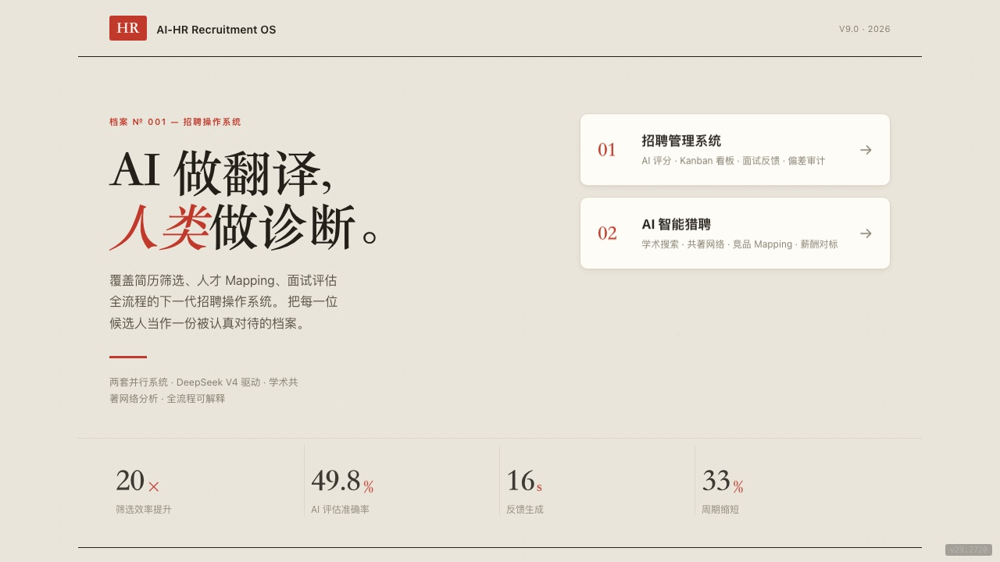
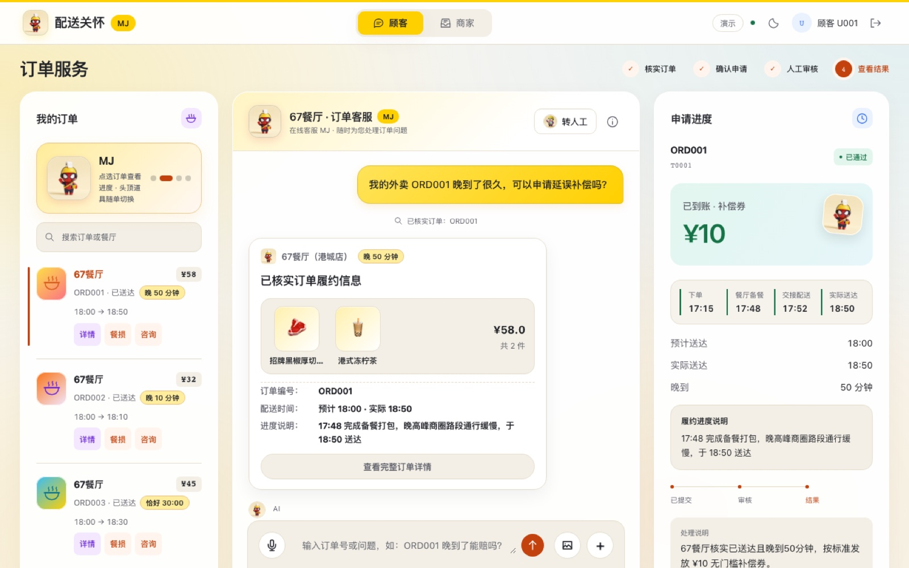
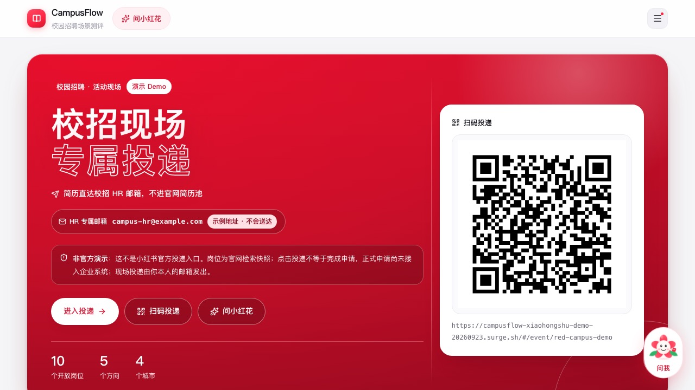
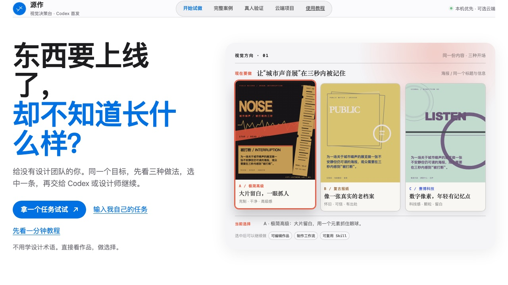
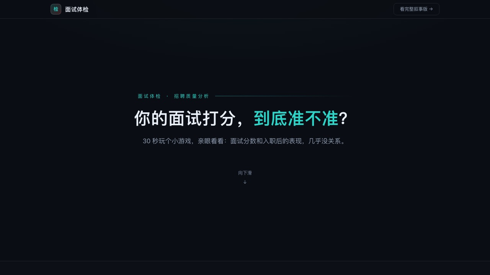

Works Pavilion
作品展馆
6 件交互作品 Demo
2 份论文与沃顿推荐材料
左右滑动 / 箭头 / 方向键切换

02 · 核心代表作
AI-HR 智能招聘与猎聘系统
证据优先的人才发现工作流：先检索公开论文与网页线索、核验同名与机构，再输出带来源、置信度与后续动作的猎聘判断。
担任角色需求拆解 / 猎聘流程建模 / 信息架构 / Vibe Coding 全栈实现

03 · 新增 AI Agent 作品
配送关怀 · 外卖延误补偿客服 Agent
顾客端对话查单核验与商家/主管审核工作台双轨联动：AI 识别诉求，服务端确定性规则精算超时阈值，内置一单一赔原子锁与角色分级重审护栏，完成 120 次受控试跑。
担任角色原型与基线系统开发（显式规则 Agent C / 基线 B / 人工重审工作台）

04 · 校招体验设计
CampusFlow · 校园招聘体验场
候选人、招聘方、面试练习三视角共享同一份官网岗位目录；投递由候选人邮箱直发 HR，站内不收简历、不建账号、不做埋点。
担任角色产品定位 / 投递动线与合规边界设计 / React + Vite 纯静态实现

05 · 视觉决策工具
源作 Origin Atlas 视觉决策台
没有专职设计团队时，先选定配色、字体与界面气质再动工，自动生成可直接交给编码 Agent 或设计师的视觉方向说明。
担任角色产品定位 / 视觉方向决策流程建模 / Vibe Coding 实现

06 · 招聘数据分析
面试体检 InterviewCheckup
把「面试打分到底准不准」量化成相关系数 r，30 秒定位与入职绩效脱节的无效面试轮次。只体检、不裁决。
担任角色产品定位 / 招聘效度统计建模 / React + FastAPI 全栈实现